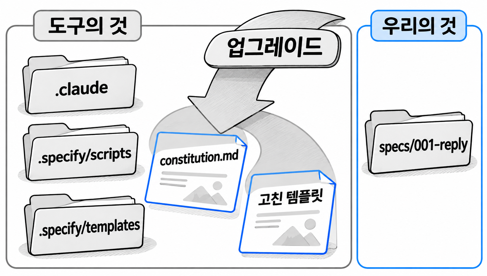

12장. 오래 쓰기 위한 운영 규칙
9장까지 기능 하나를 끝냈고, 10장과 11장에서는 그 방식을 실제 프로젝트에 들이고 끝난 스펙을 어떻게 남길지 정했습니다. 이 장의 규칙은 몇 달 뒤에도 같은 방식으로 일하기 위한 것입니다. 도구를 새 버전으로 올려도 팀이 고친 파일은 남아 있어야 합니다. 헌법과 기능은 작게 유지하고, 남이 만든 확장은 내용을 확인한 뒤에 들입니다.
1. 안전한 업그레이드
1.1 도구의 것과 우리의 것
5장에서 init이 만든 폴더를 두 가지로 나눴습니다. .specify와 .claude는 Spec Kit이 넣은 도구의 것이고, specs는 팀이 기능마다 쌓아 온 우리의 것입니다. 업그레이드는 도구의 것만 새 버전으로 바꾸는 일입니다. 공식 업그레이드 안내에도 명령 파일과 확장을 갱신할 때 specs 폴더는 건드리지 않는다고 나와 있습니다. 자바 소스 코드와 Git 기록도 바뀌지 않습니다.
다만 경계가 깔끔하지 않은 곳이 하나 있습니다. 도구의 폴더인 .specify 안에 팀이 직접 고친 파일이 섞여 있습니다.
| 파일 | 위치 | 누구의 것인가 |
|---|---|---|
| 명령 파일 | .claude 아래 | 도구의 것 |
| 보조 스크립트 | .specify/scripts/ | 도구의 것 |
| 템플릿 | .specify/templates/ | 도구의 것. 팀이 고쳤다면 우리의 것 |
| 프로젝트 헌법 | .specify/memory/constitution.md | 우리의 것(6장에서 채움) |
| 기능별 문서 | specs/001-reply/ 등 | 우리의 것 |

업그레이드 때 지켜야 할 파일은 그림 12-1에서 파란 테두리로 표시한 두 파일, 곧 헌법과 팀이 고친 템플릿입니다. 이 두 파일을 지키는 방법은 1.3에서 다룹니다.
1.2 Specify CLI · 명령 파일 · 확장 업그레이드
업그레이드할 대상은 두 곳입니다. 하나는 PC에 설치한 Specify CLI이고, 다른 하나는 프로젝트에 들어 있는 명령 파일과 확장입니다. CLI를 새 버전으로 올려도 프로젝트의 명령 파일은 저절로 바뀌지 않습니다. 그래서 두 곳을 따로 올립니다.
| 대상 | 명령 | 언제 쓰나 |
|---|---|---|
| Specify CLI | uv tool install specify-cli --force --from git+https://github.com/github/spec-kit.git@버전 | 팀이 정한 버전으로 맞출 때 |
| Specify CLI | specify self upgrade | 최신 안정 버전으로 올릴 때 |
| 프로젝트의 명령 파일 | specify integration upgrade claude | Claude Code용 명령 파일을 새 버전으로 바꿀 때 |
| 프로젝트의 확장 | specify extension update | 설치한 확장을 모두 새 버전으로 바꿀 때 |
| 프로젝트 전체 | specify init --here --force --integration claude | 위 방법이 실패할 때만 쓰는 대체 방법 |
이 책은 5장에서 Specify CLI를 v1.3.3으로 고정했습니다. 팀원마다 버전이 달라지지 않게 하려면 업그레이드할 때도 최신 버전을 그냥 받으면 안 됩니다. 팀이 정한 버전 번호를 적어 설치하고, 새 버전의 변경 내역은 업그레이드하기 전에 읽어 둡니다. specify self upgrade에도 버전을 지정하는 --tag 옵션이 있습니다. 하지만 v1.3.3에 이 명령이 들어 있는지는 [확인 필요]입니다. 그래서 이 책은 5장에서 쓴 uv tool install 방식으로 올립니다.
업그레이드도 프로젝트 파일을 바꾸는 작업입니다. 10장의 도입 절차처럼 출발점을 정리하고 전용 브랜치에서 합니다.
예제 12-1 — 업그레이드용 브랜치 만들기
파일명: 없음(프로젝트 폴더의 PowerShell에서 실행)
git status
git switch -c chore/speckit-1.4.0실행 결과
git status에서 커밋하지 않은 변경이 없어야 합니다.
nothing to commit, working tree clean
Switched to a new branch 'chore/speckit-1.4.0'git status에 바뀐 파일이 보이면 먼저 커밋하고 브랜치를 만듭니다. 그래야 업그레이드 뒤의 변경 내역에 업그레이드가 바꾼 파일만 나타납니다.
예제 12-2 — Specify CLI를 v1.4.0으로 올리기
파일명: 없음(PowerShell에 입력)
uv tool install specify-cli --force --from git+https://github.com/github/spec-kit.git@v1.4.0
uv tool list실행 결과
uv tool list의 출력에서 specify-cli의 버전이 v1.4.0으로 바뀌었는지 확인합니다.
specify-cli v1.4.0
- specify.exe--force는 이미 설치된 v1.3.3을 지우고 지정한 버전으로 다시 설치하라는 옵션입니다. 버전이 그대로이면 PowerShell 창을 닫고 새로 연 다음 다시 확인합니다. Windows에서는 실행 중인 specify 프로그램이 파일을 붙잡고 있으면 교체가 막힐 수 있습니다. 다른 창에서 specify를 실행하고 있다면 먼저 끝냅니다.
CLI를 올렸으면 프로젝트의 명령 파일을 새 버전에 맞춥니다.
예제 12-3 — 명령 파일과 확장 갱신하기
파일명: 없음(프로젝트 폴더의 PowerShell에서 실행)
specify integration upgrade claude
specify extension update
git status실행 결과
git status에 .claude와 .specify 아래 파일만 수정된 것으로 나타납니다. specs 폴더와 src 폴더의 파일은 목록에 없어야 합니다.
specify integration upgrade는 Spec Kit이 관리하는 명령 파일 가운데 팀이 직접 고친 파일이 있으면 갱신하지 않고 멈춥니다. 덮어써도 되는지 사람이 판단하라는 뜻입니다. 이때 --force를 붙이면 고친 내용을 버리고 새 버전으로 덮어씁니다. 붙이기 전에 그 파일을 왜 고쳤는지부터 확인합니다. 설치한 확장이 없으면 specify extension update는 갱신할 것이 없다는 메시지만 보여 줍니다.
업그레이드가 끝나면 대화창에서 /speckit-specify 같은 명령이 목록에 그대로 보이는지 확인하고, .\gradlew test도 실행합니다. 바뀐 것은 명령 파일뿐이므로 테스트 결과는 업그레이드 전과 같아야 합니다.
1.3 헌법과 수정한 템플릿 보호하기
공식 업그레이드 안내에 나온 헌법 파일 관련 동작은 다음과 같습니다.
specify integration upgrade는 헌법 파일을 고치지 않습니다.specify init --here --force는 이미 있는 헌법 파일을 그대로 두고, 파일이 없을 때만 템플릿에서 새로 만듭니다.
템플릿과 보조 스크립트는 마지막으로 설치된 원본과 내용이 같을 때만 새 버전으로 바뀝니다. 팀이 고친 파일은 덮어쓰기를 강제하지 않는 한 그대로 남습니다.
그렇다고 백업을 생략해서는 안 됩니다. init --here --force는 이 확인 과정을 건너뛰므로 템플릿과 스크립트를 덮어쓸 수 있습니다. 예전 버전에서는 강제 초기화가 헌법 파일까지 덮어썼다는 설명도 있습니다. 동작이 버전마다 다를 수 있으니 업그레이드 전에 커밋해 두는 것이 가장 확실합니다. 예제 12-1에서 깨끗한 상태로 브랜치를 만든 것도 이 때문입니다. 커밋이 있으면 무엇이 바뀌었는지 비교할 수 있고, 잘못 바뀐 파일은 되돌릴 수 있습니다.
예제 12-4 — 업그레이드가 헌법과 템플릿을 바꿨는지 확인하기
파일명: 없음(프로젝트 폴더의 PowerShell에서 실행)
git diff --stat HEAD -- .specify/memory .specify/templates실행 결과
아무것도 출력되지 않으면 헌법과 템플릿이 그대로입니다. 팀이 고친 적 없는 템플릿이 새 버전으로 바뀌었다면 다음처럼 바뀐 파일과 줄 수가 나옵니다.
.specify/templates/plan-template.md | 12 +++++++-----
1 file changed, 7 insertions(+), 5 deletions(-)팀이 고친 적 없는 템플릿이 바뀐 것은 정상적인 업그레이드입니다. 팀이 고친 템플릿이나 constitution.md가 목록에 나오면 덮어쓰인 것입니다. 이때는 커밋해 둔 내용으로 되돌립니다.
코드 조각
git restore .specify/memory/constitution.md
git restore .specify/templates/spec-template.mdgit restore는 파일을 마지막 커밋의 내용으로 되돌립니다. 다만 템플릿을 통째로 되돌리면 새 버전에서 그 템플릿에 추가된 항목도 함께 사라집니다. 새 항목이 필요하면 git diff로 두 내용을 비교하고, 팀이 고친 부분을 새 템플릿에 다시 옮겨 적습니다. 확인을 마치면 업그레이드 결과를 커밋하고, 코드 리뷰를 거쳐 기본 브랜치에 합칩니다.
2. 헌법 줄이기
헌법은 기능을 하나 끝낼 때마다 조금씩 길어지기 쉽습니다. 리뷰에서 문제가 하나 나오면 같은 실수를 막으려고 조항을 하나 더 적기 때문입니다. 그런데 plan, tasks, implement, converge는 모두 헌법을 읽고 시작합니다. 1장에서 본 것처럼 에이전트가 한 번에 다룰 수 있는 컨텍스트에는 한계가 있습니다. 조항이 늘면 그만큼 자리를 차지하고, 정말 중요한 금지 조항이 다른 조항 사이에 묻힙니다.
그래서 헌법을 정기적으로 돌아보고 줄입니다. 주기는 2주에 한 번쯤이 적당합니다. 조항마다 다음 질문을 던지고, 하나라도 "예"이면 정리할 후보로 올립니다.
| 질문 | "예"일 때 |
|---|---|
| 지난 기능들의 plan.md 헌법 점검과 코드 리뷰에서 이 조항이 한 번도 쓰이지 않았는가? | 우리 프로젝트에 해당하지 않는 상황일 수 있습니다. 지웁니다 |
| 다른 조항과 같은 내용인가? | 하나로 합칩니다 |
| 지켰는지 판별할 수 없는 문장인가? | 6장의 기준대로 판별할 수 있게 고치거나 지웁니다 |
| 특정 기능 하나에만 해당하는가? | 그 기능의 스펙이나 계획으로 옮깁니다 |
금지 조항은 따로 판단합니다. "build.gradle에 의존성을 추가하지 않는다"가 지난 2주 동안 리뷰에서 한 번도 문제 되지 않았다면, 쓸모가 없어서가 아니라 조항이 제 역할을 했기 때문일 수 있습니다. 금지 조항은 위반이 없었다는 이유만으로 지우지 않습니다. 그 조항이 막는 실수가 더는 일어날 수 없게 되었을 때만 지웁니다.
다음은 댓글 기능 뒤로 기능 몇 개를 더 만들면서 늘어난 헌법을 돌아본 사례입니다. 6장의 다섯 개 조 뒤에 세 조항이 추가되어 있었습니다.
| 추가된 조항 | 판단 | 이유 |
|---|---|---|
| 6조. 파일 업로드는 최대 10MB로 제한한다 | 지움 | 이 프로젝트에는 파일 업로드 기능이 없고, 계획 문서의 헌법 점검에서도 해당 없음으로만 나왔다 |
| 7조. 컨트롤러에서 엔티티를 반환하지 않는다 | 지움 | 3조 "엔티티를 요청 본문이나 응답 본문에 직접 쓰지 않는다"와 같은 내용이다 |
| 8조. 댓글 목록은 작성 시각 순으로 정렬한다 | 옮김 | 댓글 기능에만 해당하므로 specs/001-reply/spec.md에 둔다 |
헌법은 우리의 것이므로 에디터에서 직접 고쳐도 되고, 대화창에서 /speckit-constitution에 "6조와 7조를 삭제한다"처럼 지시해도 됩니다. 어느 쪽이든 고친 뒤에는 따로 커밋합니다. 조항을 지운 이유를 커밋 메시지에 남겨 두면, 나중에 같은 조항을 다시 넣자는 의견이 나왔을 때 그 이유를 바로 찾을 수 있습니다.
3. 기능 작게 유지하기
8장에서 작업이 너무 많으면 기능을 나눈다고 했습니다. 운영 규칙으로 정할 때의 기준은 tasks.md 하나가 한 번의 implement로 끝나는 분량인가입니다. 기능이 크면 implement 도중에 대화가 길어져 압축이 일어납니다. 그러면 앞에서 지킨 결정이 뒤쪽 작업에서 흐려지고, 사람이 리뷰할 변경도 한 번에 읽기 어려울 만큼 많아집니다.
기능은 스펙 단계에서 사람이 나누는 것이 가장 확실합니다. tasks.md를 보고 나서 나누면 이미 만든 spec.md와 plan.md를 다시 써야 합니다. specify에 입력할 문장을 쓰기 전에, 사용자 시나리오 단위로 끊을 수 있는지 먼저 봅니다. 공식 문서에도 큰 기능을 나누는 방법을 다룬 안내(Break down large features)가 따로 있습니다.
| 이런 신호가 보이면 | 이렇게 나눈다 |
|---|---|
| specify에 입력할 문장에 "그리고"로 이어진 기능이 여러 개다 | 기능마다 따로 specify를 실행해 폴더를 나눈다 |
| spec.md의 사용자 시나리오가 서로 다른 사용자나 화면의 이야기다 | 시나리오 묶음 하나를 기능 하나로 만든다 |
| tasks.md를 읽는 데만 한참 걸리고, 한 번에 리뷰할 자신이 없다 | 앞쪽 단계만 이번 기능으로 남기고 나머지는 다음 기능으로 미룬다 |
| implement 도중 압축이 일어났다 | 다음 기능부터 범위를 줄이고, 이번 기능은 9장처럼 끊어서 이어 간다 |
댓글 기능도 "댓글 쓰기와 목록 보기"와 "댓글 삭제 권한" 두 기능으로 나눌 수 있었습니다. 우리 예제는 작업이 일곱 개(converge 뒤에는 아홉 개)라 한 번에 진행했지만, 권한 규칙이 더 복잡했다면 나누는 편이 리뷰하기 쉬웠을 것입니다. 기능이 작으면 11장에서 정한 보존 모델로 스펙을 남기기도 쉬워집니다. 폴더 하나가 변경 하나를 설명하기 때문입니다.
4. 커뮤니티 확장 고르기
확장(extension)은 Spec Kit에 새 명령이나 절차를 더하는 묶음입니다. 기본 명령은 constitution부터 converge까지입니다. 확장을 설치하면 버그 수정이나 아이디어 평가처럼 성격이 다른 작업에 맞는 명령이 생깁니다. Spec Kit 팀이 아닌 사람들이 만든 커뮤니티 확장도 많습니다. 13장에서 쓸 bug · assess도 확장으로 설치합니다.
4.1 specify extension search
확장은 specify extension search로 찾습니다. 검색어를 붙이면 이름과 설명에 그 말이 들어간 확장만 보여 줍니다.
기본 문법
specify extension search 검색어
specify extension info 확장이름예제 12-5 — 리뷰에 쓸 확장 찾기
파일명: 없음(프로젝트 폴더의 PowerShell에서 실행)
specify extension search review실행 결과
검색어와 맞는 확장마다 이름, 버전, 설명, 작성자가 표로 출력됩니다. 결과에 나오는 확장과 그 개수는 검색하는 시점의 목록에 따라 달라집니다.
--tag나 --author 같은 옵션으로 결과를 더 좁힐 수 있습니다. 다만 v1.3.3에서 쓸 수 있는 옵션의 종류와 검색 대상 목록의 범위는 [확인 필요]입니다. 버전마다 다를 수 있으므로 specify extension search --help로 확인합니다.
마음에 드는 확장이 있으면 설치하기 전에 specify extension info 확장이름으로 자세한 정보를 봅니다. 여기서 볼 항목은 두 가지입니다. 하나는 확장의 원본 저장소 주소이고, 다른 하나는 효과(effect) 항목입니다. 효과는 그 확장이 보고서만 만드는지(read-only), 프로젝트 파일을 고치는지(read-write)를 나타냅니다.
검색 결과에 나왔다고 안전한 것은 아닙니다. 커뮤니티 목록을 관리하는 쪽은 각 항목의 정보가 빠짐없이 형식에 맞게 적혔는지만 확인합니다. 확장의 코드를 검토하거나 보증하지 않는다는 점도 직접 밝히고 있습니다. 확장의 내용은 설치하는 팀이 확인해야 합니다.
4.2 설치 전에 명령 파일 읽어 보기
4장에서 보았듯 Spec Kit의 명령은 에이전트에게 주는 마크다운 지시문입니다. 확장의 명령도 똑같이 지시문이므로 설치하기 전에 사람이 읽어 볼 수 있습니다. specify extension info가 알려 준 저장소를 열고, 확장 정보를 적은 extension.yml과 명령 파일(마크다운 파일)을 읽습니다.
읽을 때는 이 지시문을 받은 에이전트가 무엇을 하게 되는지에 집중합니다.
| 확인할 것 | 걸리는 예 |
|---|---|
| 어떤 파일을 고치라고 하는가 | specs 폴더 밖의 자바 코드나 build.gradle, 헌법 파일을 고치라고 한다 |
| 어떤 터미널 명령을 실행하라고 하는가 | git push, 파일 삭제, 외부 주소로 데이터를 보내는 명령이 있다 |
| 외부에서 무엇을 받아 오는가 | 실행할 때마다 인터넷에서 스크립트나 지시문을 내려받는다 |
| 다른 명령에 자동으로 끼어드는가 | 기본 명령의 앞뒤에 실행되는 훅(hook)을 걸어 둔다 |
| 효과 항목과 실제 내용이 맞는가 | read-only라고 적었는데 명령 파일이 파일을 고치라고 지시한다 |
걸리는 것이 있다고 무조건 버릴 필요는 없습니다. 그 동작이 확장의 목적에 맞는지 판단하면 됩니다. 버그 수정 확장이 자바 코드를 고치는 것은 자연스럽습니다. 반대로 문서를 점검하는 확장이 외부로 데이터를 보낸다면 설치하지 않습니다.
설치하기로 했다면 업그레이드 때처럼 전용 브랜치에서 설치합니다. git status로 확장이 추가한 파일을 확인한 뒤 커밋합니다. 설치한 뒤에도 1장의 권한 승인은 그대로 작동합니다. 확장의 명령이 파일을 고치거나 터미널 명령을 실행하려 하면 Claude Code가 승인을 묻습니다. 이 승인 요청을 하나씩 읽는 것이 마지막 확인 단계입니다. 확장이 마음에 들지 않으면 specify extension remove 확장이름으로 지웁니다. 브랜치를 버리면 설치 전 상태로 돌아갑니다.